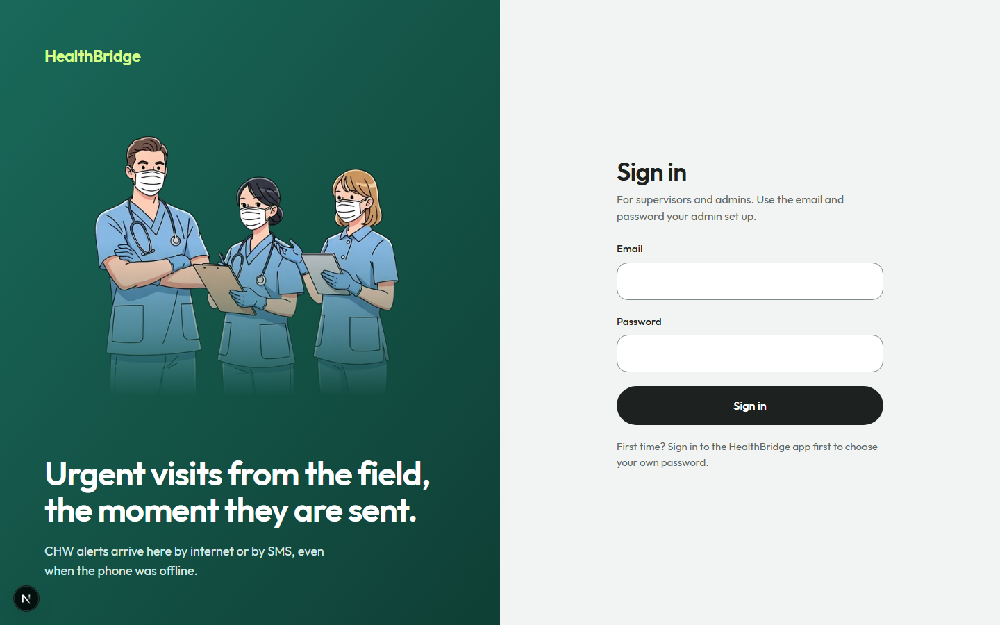
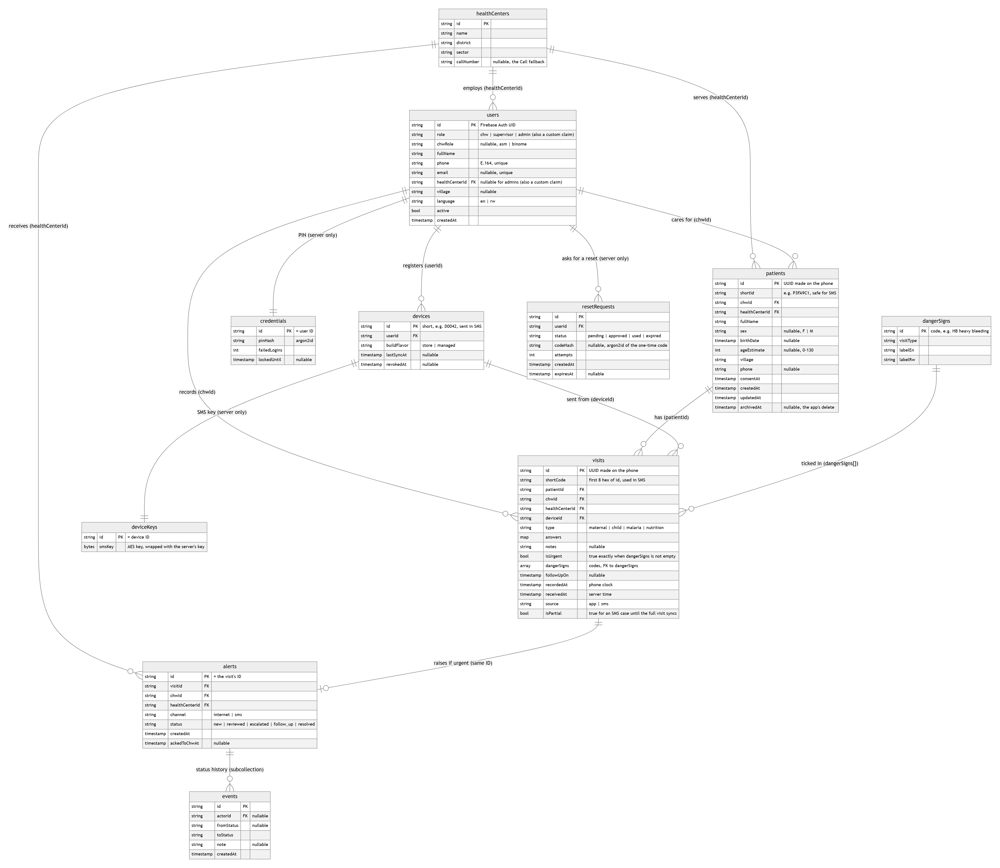

Offline-first mobile app for community health workers, with supervisor and admin dashboards
MOBILE APPLICATION DEVELOPMENT: FRONT-END AND BACK-END IMPLEMENTATION
FINAL PROJECT REPORT
GROUP [#]
NAME OF FACILITATOR
[Facilitator name]
[Institution]
Kigali, Rwanda
November 2026
Demo video link: [paste the unlisted video link here]
GitHub link: https://github.com/nshderrick056/HealthBridge_v2
The repository is public. The default branch is main; feature work was done on branches (for example feat/firebase, feat/sms-roundtrip and feat/redesign) and merged into main.
| S/N | Group member | Role | Attendance | Contribution |
|---|---|---|---|---|
| 1 | [Name] | Member | [dates] | Sign-in and accounts: PIN, SMS-code and email sign-in, the temporary-PIN first sign-in, forgot-PIN flow, SharedPreferences settings, and the web dashboard frame (sign-in, session cookies, role routing). Server auth routes. |
| 2 | [Name] | Member | [dates] | Patients, visits and the records database: encrypted local database, repositories, the visit form and its validation, the Firestore security rules and indexes, and the ERD. |
| 3 | [Name] | Member | [dates] | Urgent alerts, sync and SMS: the internet and encrypted-SMS alert paths, the SMS codec, the sync engine and background sync, the server SMS webhook and merge of SMS and full visits. |
| 4 | [Name] | Member | [dates] | Supervisor flow and home screens: alert inbox and case screens, the status state machine, CHW and patient history, the CHW home with stat cards, and the supervisor API. |
| 5 | [Name] | Member | [dates] | Admin, design system and tests: theme and shared widgets, admin screens (resets, members, centres), role shells and navigation, the layout tests, and the admin API. |
[TEAM: check each row against the Group Contribution Tracker and the Git history before you submit. The table must match Git statistics.]
HealthBridge Rwanda is a mobile application, built with the Flutter framework for Android, that helps community health workers (CHWs) in Rwanda record patient visits in the field and raise urgent alerts when a patient shows danger signs. Rwandan health centres supervise many CHWs who often work without a mobile data connection, so the app is offline-first: every record is saved first in an encrypted database on the phone and uploaded to Cloud Firestore when a connection exists. When an urgent visit is recorded and the internet is not available, the app sends an encrypted SMS to the health centre's gateway, so that the alert is not lost.
The solution has three parts: the Flutter app for CHWs, supervisors and admins; a small Express server on the Firebase Admin SDK for the tasks an app must not do itself; and a Next.js web dashboard for supervisors and admins. The tools and methods include Flutter, Riverpod for state management, drift with SQLCipher for local storage, Firebase Authentication and Cloud Firestore with security rules, Africa's Talking for SMS, and a branch-based Git workflow.
The objective of this project is to build HealthBridge Rwanda, a working mobile application that lets a community health worker register patients, record visits and send urgent alerts to a supervisor, even where there is no mobile data. The project also gives supervisors a way to triage alerts and see the history of their health workers and patients, and gives administrators a way to create and manage accounts.
To achieve this, the project has the following technical objectives:
setState as the state approach (Rousselet, n.d.; Martin, 2012).Health workers in many rural areas serve patients far from a health centre and often have limited signal. A pregnant woman with heavy bleeding or a child with a high fever needs the health centre to know at once. HealthBridge addresses this by keeping every record safe on the phone, uploading it when a connection returns, and sending an alert through SMS when the internet is not available.
For supervisors, the app and the dashboard bring urgent cases to the top of a single inbox, show who is responsible, and keep a record of every status change. For the health system as a whole, accounts are created only by an administrator, health records are never deleted (they are archived), and each person can see only the data they are responsible for.
The application has three roles. Each role sees its own screens after signing in; the role is carried by the sign-in token, not chosen on the phone.
| Role | What the role can do |
|---|---|
| Community health worker (CHW) | Sign in by PIN, SMS code or email; see the home screen with stat cards (visited today, due for a visit, urgent today); register, edit and archive patients; record visits with a form that validates entries; send an urgent alert by internet or SMS; see sync status and retry; change text size, default visit type and the remember-login option. |
| Supervisor | See the alert inbox for their health centre; open a case; move it to reviewed, escalated, follow-up or resolved with a note; see the list of their CHWs and each CHW's visit history; see the list of patients and a patient's profile and history. The same functions are available on the web dashboard. |
| Admin | Create CHW and supervisor accounts; approve forgot-PIN requests; see members in two tabs (CHWs and Supervisors); open a member to see details, deactivate or delete the account; manage health centres and open a centre's details. |
The interface follows the Figma prototype, which was redesigned to a single visual system: the Outfit typeface, a green and lime palette (brand green #19695A, lime #D4FF89), 24 px card corners, 56 px pill buttons and a floating dark tab bar with a lime Record button. Red is used only for urgent items and amber only for visits that are due. The design tokens live in lib/core/theme/app_theme.dart and the shared widgets in lib/core/widgets/widgets.dart, so every screen uses the same buttons, cards, avatars and chips. The text contrast of the main colour pairs was chosen to meet at least 4.5:1 for text and 3:1 for control edges (W3C, 2018).

Flutter is Google's open-source toolkit for building natively compiled applications from one Dart codebase (Flutter Team, n.d.). The HealthBridge app targets Android only, in two build flavours: store, which opens the phone's SMS composer, and managed, which sends the SMS itself through a small Kotlin channel. Flutter's widget tests were also used to check the layout of every main screen at four screen sizes.
State is managed with Riverpod (Rousselet, n.d.). Each screen has a controller written as a Notifier with immutable state, and data that changes over time is exposed with StreamProvider and FutureProvider. Widgets read state with ref.watch, so only the widgets that depend on a value rebuild. Riverpod was chosen because providers are compile-checked, can be overridden in tests without a BuildContext, and keep business logic out of the widgets. For example, the Urgent-today stat card and the red alert card on the home screen both watch the same dispatch provider, so one state change updates both.
Records are stored on the phone in a SQLite database accessed with drift (Binder, n.d.) and encrypted with SQLCipher (Zetetic, n.d.). A separate outbox table queues every change for upload. Because the patient row and its outbox row are written in one database transaction, a record is never saved without being queued.
Firebase Authentication provides sign-in and carries each user's role and health centre as custom claims (Google, n.d.-b). Cloud Firestore stores the shared records and enforces access with security rules (Google, n.d.-a). The Firestore project is healthbridge-rwanda. Firestore's own offline cache is switched off because it is not encrypted; offline support comes from the encrypted drift database instead.
A small Express server written in TypeScript uses the Firebase Admin SDK for what an app must not do: checking PIN hashes, minting custom sign-in tokens, creating accounts, changing case statuses, and receiving SMS messages. PINs are stored only as Argon2 hashes (Biryukov et al., 2021) in a collection that no app can read.
Urgent alerts that cannot go over the internet are sent as SMS through Africa's Talking (Africa's Talking, n.d.). The message body is encrypted with AES-256-GCM (Dworkin, 2007), using the header as associated data so that a message cannot be replayed under another device. The server confirms with a short code carrying a tag computed with HMAC-SHA256 (Krawczyk et al., 1997), so only the server can confirm an alert.
The supervisor and admin dashboard is built with Next.js (Vercel, n.d.). Sign-in tokens are kept in httpOnly cookies, so the browser's JavaScript cannot read them, and a request forwarder passes calls to the Express server. A proxy.ts file sends admins and supervisors to their own areas.
The team worked in short iterations, building the project in vertical slices: each slice (sign-in, patients and visits, urgent alerts, supervisor flow, admin and design) delivered something that could be run and checked end to end. Each member owned one slice in the app, the dashboard and the server, so that every member contributed to the mobile application and not only to the web code. Work was done on feature branches, and changes were merged into main only after tests passed.
The assignment's design step was followed in order: the Figma prototype first, then the ERD, then the Firestore implementation and the security rules, and finally the screens and tests.
| Purpose | Tool |
|---|---|
| App framework and language | Flutter (stable) and Dart |
| State management | flutter_riverpod |
| Local database | drift with SQLCipher; flutter_secure_storage for the key |
| Preferences | shared_preferences |
| Backend | Firebase Authentication, Cloud Firestore, Firebase Admin SDK |
| Server | Node.js 20+, Express, TypeScript, Vitest |
| Dashboard | Next.js, React, Vitest |
| SMS | Africa's Talking (sandbox during development) |
| Testing | flutter_test, firebase_auth_mocks, Firebase emulators, Vitest |
| Design | Figma |
| Version control | Git and GitHub |
AI assistance was used in this project. The team used Anthropic's Claude Code (Anthropic, n.d.) as a coding assistant for writing and reviewing code, tests and documentation, and for drafting parts of this report. [TEAM: state honestly what share of the code and of this report was AI-assisted (the assignment expects less than 40%), and describe what the team members wrote, reviewed, changed and tested themselves. Edit this paragraph so that it is accurate for your group.] All code was run, tested and reviewed by the team before it was merged.
The app is organised in layers, following clean architecture principles (Martin, 2012). Business rules do not live in widgets.
| Folder | Responsibility |
|---|---|
lib/presentation/ | Screens (widgets) with a Riverpod controller beside each; no setState for app state. |
lib/domain/ | Entities, repository interfaces (for example PatientRepository) and use cases: plain Dart. |
lib/data/ | The encrypted drift database and the repositories that implement the domain interfaces. |
lib/core/ | Firebase sign-in service, API client, settings (SharedPreferences), SMS codec, theme and shared widgets. |
lib/sync/ and lib/urgent/ | Upload to Firestore and background sync; the urgent-alert pathway. |
Role-based navigation is handled by three shells (CHW, supervisor and admin) built on an IndexedStack, so each tab keeps its state when the user switches tabs.
The app offers three ways to sign in, all backed by Firebase Authentication: phone and PIN (the server checks the PIN and returns a custom token), phone and SMS code (Firebase sends a one-time code), and email and password. Accounts are not self-registered: an administrator creates each account, and the server texts a random temporary PIN (and a temporary password if an email was given). At the first sign-in the mc (must change) claim in the token makes the app show a screen where the user must choose their own PIN and password before anything else.
// server/src/auth/routes.ts: PIN check, lock-out and custom token
if (!(await verify(cred.pinHash, given))) {
const locks = (cred.failedLogins ?? 0) + 1 >= MAX_FAILED_LOGINS;
await credRef.update(locks
? { failedLogins: 0, lockedUntil: Timestamp.fromMillis(Date.now() + LOCK_MS) }
: { failedLogins: FieldValue.increment(1) });
throw unauthorized();
}
const claims = { role: user.role, hc: user.healthCenterId };
res.json({ customToken: await fb.auth.createCustomToken(user.id, claims) });
Every screen's behaviour sits in a controller. For example, the login controller is a Notifier<LoginState> that holds the chosen method, a busy flag and an error message, and the sign-in screen only calls it and displays its state. On success the session provider is set and the root widget swaps the sign-in screen for the app.
// lib/presentation/auth/login_controller.dart
class LoginController extends Notifier<LoginState> {
@override
LoginState build() => const LoginState();
Future<void> submit(String id, String secret) => _run(
id,
() => state.method == LoginMethod.email
? _auth.signInWithEmail(id.trim(), secret)
: _auth.signInWithPin(normalizePhone(id), secret),
);
}
The home screen shows one state change touching two widgets: when an urgent alert is sent, the Urgent-today stat card and the red alert card both rebuild, because both watch the same dispatch provider.
All create, read, update and delete operations on patients work offline. The repository writes to the local database and adds an outbox row in the same transaction; the sync engine later uploads the change to Firestore under the signed-in CHW's account and the security rules.
| Operation | In the app | In Firestore |
|---|---|---|
| Create | Register patient; the list updates at once | New document in patients |
| Read | List with search, profile and visit history (drift streams) | Same fields, read by the owner and the supervisor of the same centre |
| Update | Edit a patient; the change is queued | updatedAt and the edited fields change |
| Delete | "Archive": the patient disappears from every list | The document stays and gets archivedAt; the rules refuse a real delete |
// lib/data/repositories/patients_repository.dart
return _db.transaction(() async {
final patient = await _db.into(_db.patients).insertReturning(row);
await _enqueue(patient); // outbox row, same transaction
return patient;
});
/// The app's "delete": hides the patient everywhere but keeps the record.
Future<Patient> archive(Patient p) =>
update(p.copyWith(archivedAt: Value(_now())));
Errors are shown to the user as snackbars with a short message, for example when a case status cannot be saved or when the server cannot be reached.
When a visit has a danger sign, the app tries to send the visit and its alert to Firestore within 10 seconds. If that fails, it sends an encrypted SMS to the health centre's gateway number. The server decrypts the SMS, creates a partial case, and replies HB OK <code> <tag> with an HMAC tag; the app ignores any reply whose tag does not match its device key. When the phone is online again, the full visit is uploaded and the server merges it into the same case. If no confirmation arrives within 10 minutes, the card offers Resend and Call.
// lib/urgent/urgent_dispatcher.dart
Future<void> send(String visitId) async {
await _repo.start(visitId);
try {
await _postAlert(visitId).timeout(internetTimeout); // 10 s
await _repo.updateState(visitId, DispatchState.confirmed);
} on Exception {
await sendSms(visitId);
}
}
A supervisor changes a case's status through the server, which allows only certain moves and records each change with the person, the old and new status and a note in an events sub-collection. The change runs inside a Firestore transaction that re-reads the status first, so two supervisors cannot overwrite each other. The server also texts the CHW when a case is escalated or put on follow-up.
// server/src/supervisor/routes.ts
export const TRANSITIONS: Record<Status, Status[]> = {
new: ['reviewed', 'escalated', 'follow_up', 'resolved'],
reviewed: ['escalated', 'follow_up', 'resolved'],
escalated: ['follow_up', 'resolved'],
follow_up: ['escalated', 'resolved'],
resolved: [],
};
An administrator can deactivate a member: the server sets active to false, disables the user in Firebase Authentication and revokes the refresh tokens, so the person is signed out at once. Deleting a member removes the account, credentials and devices but keeps the patients and visits that person recorded, because health records are kept.
Three preferences are saved with SharedPreferences and restored when the app starts: the text size (Normal, Large, Extra large), the default visit type, and the remember-login option together with the saved phone number. The PIN is never stored. The settings controller reads the values in build() and writes them on every change.
// lib/core/settings/settings.dart
Future<void> setTextSize(TextSize size) async {
state = _with(textSize: size); // the screen updates at once
await _prefs.setString(_textSize, size.name); // then it is saved
}
The entity-relationship diagram (Figure 4, on the next page) was designed before the database was implemented. It shows the collections, their attributes, primary keys (PK) and foreign keys (FK). Firestore has no joins or foreign-key constraints, so the relationships are kept by the app and the server and checked by the security rules; for example, a visit may point only at a patient owned by the same CHW. The field names in the diagram are exactly those stored and checked by the rules, and all names are written in camelCase.
| Collection | Purpose | Main fields |
|---|---|---|
users | One document per account; the ID is the Firebase Auth UID | role, fullName, phone, email, healthCenterId, active, createdAt |
healthCenters | Health centres | name, district, sector, callNumber |
patients | Patients registered by a CHW | shortId, chwId, healthCenterId, fullName, village, consentAt, archivedAt |
visits | Visits recorded on the phone | patientId, chwId, type, answers, dangerSigns, isUrgent, source |
alerts and alerts/{id}/events | One alert per urgent visit (same ID) and its status history | status, channel; events: actorId, fromStatus, toStatus, note |
dangerSigns, devices | Reference list; devices registered to a user | labelEn, labelRw; buildFlavor, lastSyncAt |
Server-only: credentials, deviceKeys, resetRequests, smsMessages, auditLog | PIN hashes, SMS keys, reset codes and logs; closed to every app by the rules | pinHash, failedLogins, lockedUntil, and so on |
No data is duplicated: a visit stores only the patient's ID, and an alert has the same ID as its visit. Composite indexes (in firestore.indexes.json) support the main queries: alerts by health centre, status and time (the supervisor inbox), alerts by health centre and time, visits by CHW and time, and users by health centre and role.

The security rules in firestore.rules decide who may read and write each document. The role and health centre come from the sign-in token's custom claims, which only the server can set, so a user cannot raise their own access.
chwId, healthCenterId, shortId and createdAt cannot change.// firestore.rules (patients)
match /patients/{patientId} {
allow read: if (isChw() && existing().chwId == uid())
|| (isSupervisor() && existing().healthCenterId == hc());
allow create: if isChw() && validPatient()
&& incoming().chwId == uid() && incoming().healthCenterId == hc();
allow update: if isChw() && existing().chwId == uid() && validPatient()
&& same('chwId') && same('healthCenterId') && same('shortId') && same('createdAt');
allow delete: if false; // archive instead (archivedAt)
}
patients collection after a create, an archived patient with archivedAt, and the Rules tabTesting was done at four levels. The Flutter tests include unit tests for the business logic, widget tests for the screens, and layout tests that render every main screen at several sizes. The server and the dashboard have their own automated tests. Finally, the application was run on a physical phone.
| Level | Tool | What it checks |
|---|---|---|
| Unit tests (Flutter) | flutter_test, firebase_auth_mocks | Settings are saved and restored; sign-in controller sets the session; the first sign-in must change temporary details; patients search and filter; validation ranges; the SMS codec against shared test vectors; sync and the urgent dispatcher. |
| Widget tests (Flutter) | flutter_test | Screens show the expected content and react to input, including the register-a-patient form, the first-sign-in screen, the supervisor case flow and the admin screens. |
| Layout tests (Flutter) | flutter_test | Every main screen is rendered at 320x568, 430x932, landscape 844x390 and landscape with extra-large text; any RenderFlex overflow fails the test. |
| Server tests | Vitest on the Firebase emulators | Sign-in, lock-out, accounts, resets, supervisor transitions and scoping, admin routes, and SMS handling. |
| Dashboard tests | Vitest and Testing Library | Sign-in form, alert inbox, case detail, member detail and history pages. |
// test/layout_test.dart: the four screen sizes every main screen is tested at
const _sizes = {
'small phone (320x568)': (Size(320, 568), 0.55),
'large phone (430x932)': (Size(430, 932), 0.55),
'landscape (844x390)': (Size(844, 390), 0.55),
'landscape, extra large text': (Size(844, 390), 0.72),
};
| Check | Result |
|---|---|
flutter analyze | No issues found. |
Flutter tests (flutter test --coverage) | 130 tests, all passed. |
| Line coverage of the Flutter app | 73.0% of the hand-written code (2,737 of 3,751 lines). Including the generated drift file db.g.dart the figure is 56.2% (3,488 of 6,204 lines). |
| Server tests (Vitest, Firebase emulators) | [TEAM: run npm test in server/ (Java 21 is needed for the Firebase emulators) and write the real result here, for example "NN tests, all passed". At the last full run on the emulators, 48 tests passed.] |
| Dashboard tests (Vitest) | 35 tests, all passed. |
The coverage figure was computed from the lcov.info file written by flutter test --coverage. The generated file lib/data/db.g.dart (2,453 lines, 31% covered) is produced by the drift code generator and is not written by hand, so the first figure is the more meaningful measure of the team's own code. The files with the least coverage are the forgot-PIN screen (forgot_screen.dart), the authentication service (auth_service.dart, 40%) and the admin screens (admin_screens.dart, 50%); these are the next candidates for additional tests.
flutter analyze with no issues, and the flutter test --coverage resultOn 15 November 2026 the managed build of the app was run on a physical Samsung phone against the Firebase project, with the server behind a tunnel and the Africa's Talking sandbox. The following were checked: all three sign-in methods; a patient and a visit appearing in Firestore under the CHW; forgot-PIN from request to a working new PIN; an urgent alert reaching the supervisor's inbox and being escalated with a note and recorded in the history; and an admin creating an account. Problems found and fixed during the run included custom tokens needing to be signed with the key file, the SMS region policy needing to allow Rwanda, and records left by an older install being uploaded under the new account (the app now allows one CHW's records per phone). A later run found a sign-in screen that stayed on "Please wait" after setting a new password, because Firebase ends the old session when the password changes; the app now signs in again with the new password.
The repository is at https://github.com/nshderrick056/HealthBridge_v2. The README in the repository has the same steps.
npm i -g firebase-tools.cd server cp .env.example .env # set GOOGLE_APPLICATION_CREDENTIALS to the key path (outside the repo) npm ci npm test # starts the Firebase emulators and runs the server tests npm run seed # demo accounts and data (SEED_PIN and SEED_PASSWORD in .env) npm run dev # http://localhost:3000
flutter pub get flutter test flutter run --flavor managed \ --dart-define=API_URL=https://<address the phone can reach> \ --dart-define=SMS_GATEWAY_NUMBER=+2507XXXXXXXX # release APK: flutter build apk --flavor managed --dart-define=API_URL=... --dart-define=SMS_GATEWAY_NUMBER=...
The phone must reach the server, so during development the server is exposed with a tunnel (for example a Cloudflare quick tunnel) and its address is passed as API_URL. A new tunnel address means the app must be rebuilt.
cd dashboard cp .env.example .env.local # API_URL and FIREBASE_WEB_API_KEY npm ci npm test npm run dev # http://localhost:3001
npm run seed creates demo CHWs (phone numbers +250780000101 to +250780000103, signed in with the PIN from SEED_PIN), a supervisor (supervisor@example.test) and an admin (admin@example.test), both signed in with SEED_PASSWORD. These are synthetic accounts. After changing the security rules, deploy them with firebase deploy --only firestore. After changing a drift table, run dart run build_runner build.
HB OK reply on the managed build. The web dashboard is covered by unit tests but has had little manual testing.HealthBridge Rwanda shows how Flutter, Riverpod and Firebase can be combined into an application for a setting with unreliable connectivity. The app records patients and visits on an encrypted local database, uploads them to Cloud Firestore under strict security rules, and sends urgent alerts by internet or encrypted SMS. Supervisors and administrators have their own screens in the app and on the web dashboard. The layered structure, the Riverpod controllers and the automated tests, including layout tests at several screen sizes, made the work easier to share between five people and to check.
The project also showed the limits of a short development period: the SMS path was not fully proven on the Firebase build, the sandbox SMS account does not reach real phones, and the clinical content still needs expert review. These are listed in Section 8 as the next steps. With a live SMS number, hosting and clinical review, the application could be piloted with a health centre.
Africa's Talking. (n.d.). SMS API documentation. https://developers.africastalking.com/docs/sms/overview
Anthropic. (n.d.). Claude Code. https://www.anthropic.com/claude-code
Binder, S. (n.d.). Drift documentation. https://drift.simonbinder.eu
Biryukov, A., Dinu, D., Khovratovich, D., & Josefsson, S. (2021). Argon2 memory-hard function for password hashing and proof-of-work applications (RFC 9106). IETF. https://www.rfc-editor.org/rfc/rfc9106
Dworkin, M. (2007). Recommendation for block cipher modes of operation: Galois/Counter Mode (GCM) and GMAC (NIST Special Publication 800-38D). https://csrc.nist.gov/pubs/sp/800/38/d/final
Flutter Team. (n.d.). Flutter documentation. https://docs.flutter.dev
Google. (n.d.-a). Cloud Firestore documentation and security rules. https://firebase.google.com/docs/firestore
Google. (n.d.-b). Firebase Authentication documentation. https://firebase.google.com/docs/auth
Krawczyk, H., Bellare, M., & Canetti, R. (1997). HMAC: Keyed-hashing for message authentication (RFC 2104). IETF. https://www.rfc-editor.org/rfc/rfc2104
Martin, R. C. (2012, August 13). The clean architecture. https://blog.cleancoder.com/uncle-bob/2012/08/13/the-clean-architecture.html
Rousselet, R. (n.d.). Riverpod documentation. https://riverpod.dev
Vercel. (n.d.). Next.js documentation. https://nextjs.org/docs
W3C. (2018). Web content accessibility guidelines (WCAG) 2.1. https://www.w3.org/TR/WCAG21/
Zetetic. (n.d.). SQLCipher. https://www.zetetic.net/sqlcipher/